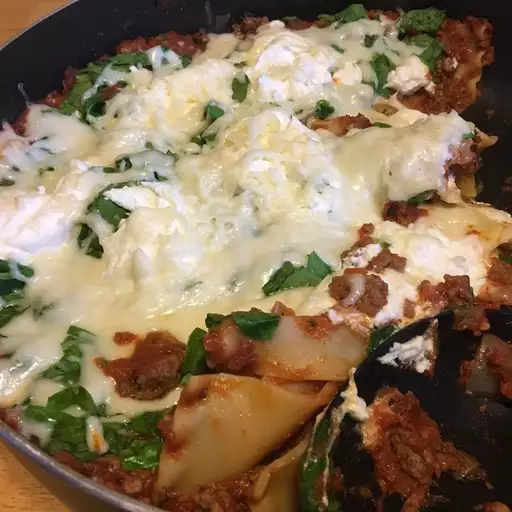

Lasagna
Skillet Spinach Lasagna

This skillet spinach lasagna recipe is a quick and easy way to make lasagna.
Ingredients
- 1 pound bulk Italian sausage
- 8 lasagna noodles, broken into pieces
- 1 (28 ounce) can crushed tomatoes
- 1 (8 ounce) can tomato sauce
- 2 cups torn fresh spinach
- ½ cup ricotta cheese
- 4 ounces fresh mozzarella cheese, sliced
- ¼ cup grated Parmesan cheese
Steps
- Heat a large skillet over medium-high heat. Add sausage; cook and stir, breaking it into smaller pieces, until brown and crumbly, 5 to 7 minutes. Stir in noodles.
- Pour crushed tomatoes and tomato sauce over sausage-noodle mixture; bring to a boil. Cover skillet, reduce heat to low, and simmer until noodles are cooked and sauce thickens, about 25 minutes. Add spinach, ricotta, and mozzarella. Cover skillet and remove from heat. Let lasagna stand for 5 minutes. Top with Parmesan cheese.